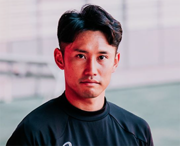

大胆にくり抜かれたアウターソールが、屈曲性と軽量性を生み出す。
より足と一体化することで、ピッチに力を伝え、今までにない感覚を。
安定したプレーに欠かせない3つの特徴
激しいカットイン時でも狙いをロックオン

DS LIGHT ACROSS3 はカットインモーション時に横ぶれを軽減すること。
足との一体感を生み出し、プレイヤーのキレを生み出す。
内外非対称の補強で、足の動きに追従


アッパーの内側を薄く、外側を厚くすることで切り返し時に
アッパーの内側は足に寄り添い、外側は剛性を発揮。
フィット性とホールド性、柔軟性を同時に発揮。

スタンビリティーソールがグリップ力を発揮


多くのフットボールプレイヤーが愛用する外付けヒールカウンター搭載のソール。
フラットな接地感と適度な反発性が特徴。
森下龍矢選手のインタビュー

ACROSS PRO 3は足馴染みがいいです。
自分の足と一体化しているように感じます。
生年月日
身長/体重
出身
1997/4/11
170/65
静岡県
ジュビロ岩田のアカデミー出身で2015年にはU-18日本代表に選2020年サガン鳥栖に入団し、
2試合連続ゴールを決めるなどしてプロ一年目からレギュラーに。2021年には名古屋グランパスに入団し、
2024年にレギア・ワルシャワへ移籍。